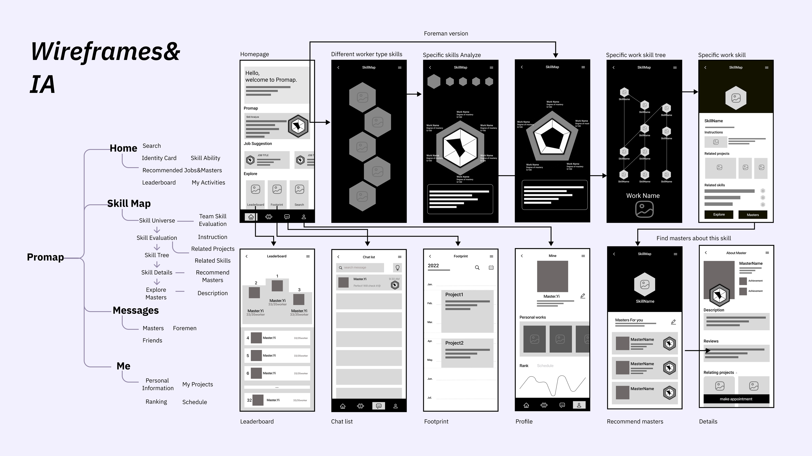

UX 设计 · 用户研究
Promap
建筑工人职业发展数字平台
背景
Promap 是一个致力于革新工人职业发展路径、提升社会认可度的数字平台。通过综合技能图谱，平台从职业起点开始伴随用户成长，将他们与合适的导师连接，并创造与同伴共同学习的机会。最重要的是，Promap 帮助工人向潜在雇主清晰展示自身技能，确保他们获得应有的认可与机会。
第一阶段
课程项目
研究探索与原型设计
本阶段聚焦于用户研究、旅程定义、信息架构、线框图与原型设计，完成了连贯的概念雏形。

图 1. 课程阶段研究综合与初步用户洞察。

图 2. 覆盖各阶段情绪、痛点与机会点的用户旅程地图。

图 3. 核心产品流程的线框图与信息架构。

图 4. 高保真原型与界面方向。
第二阶段
实习项目
Promap × 博世：深化研究与策略规划
实习阶段（Promap × Bosch）将重心转移至更深入的用户研究、用户画像策略、旅程验证、MVP 定义与产品路线图规划。
用户研究：我们做了什么
- 对不同岗位类型、年龄段及职业阶段的工人进行访谈。
- 将访谈数据分析拆解为职业维度、优先级与关系模式。
- 将研究发现转化为决策支持与内容架构的产品需求。

图 5. 访谈样本与数据收集范围。

图 6. 数据分析与访谈维度提炼。
五类用户画像 + 旅程地图

图 7. 用于细分与优先级决策的五类用户画像。

图 8. 连接职业发展阶段与用户需求的旅程地图。
MVP 定义与产品路线图

图 13. MVP 范围定义与分阶段扩展路线图。
项目成果
Promap 完成了从课程概念到真实项目落地的完整设计闭环——跨越两个阶段，在研究深度、策略清晰度与原型完成度上均达到了可交付的水准，并为后续产品迭代提供了扎实的研究基础。